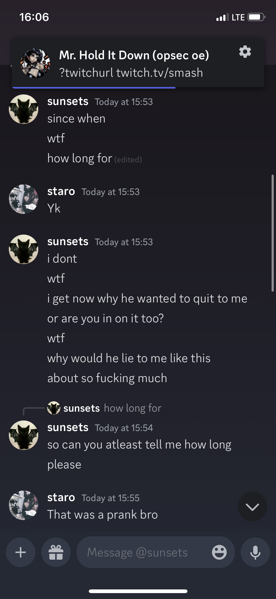
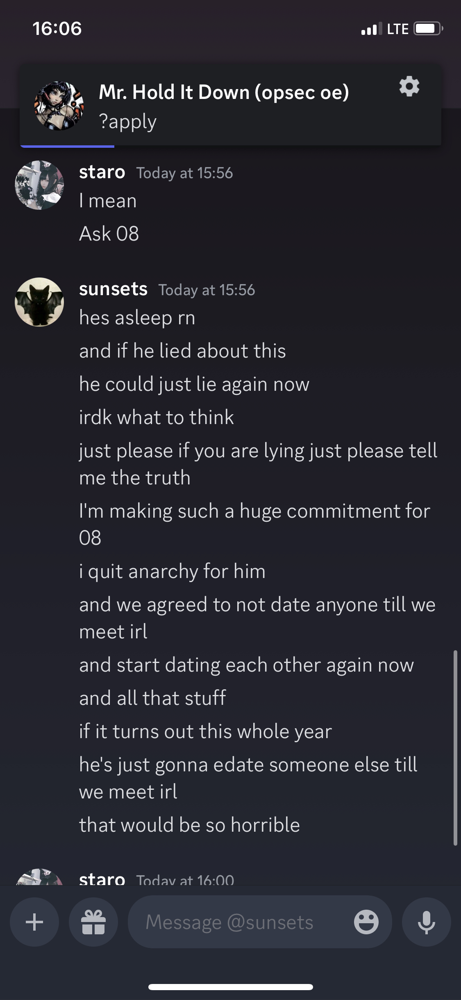
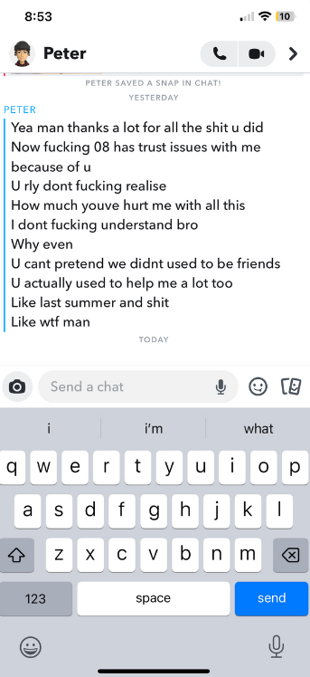

Boze 1.2 (Freeware Edition)
mirrors:
crystalpvp.ru
plutosolutions telegram
[ info ]
Newest version of the newest goyslop made by Konas developers. This time, it's for 1.20.1 and it has an API for addons.
You don't want to use this
[ addons ]
To make addons for this garbage you need to download this repository, import it into your favorite IDE, build and throw the output jar into your mods folder.
Click here for a video example of a well made addon
[ how-to ]
- Download the Fabric installer from here, open it and choose Minecraft 1.20.1 & Fabric Loader 0.14.21
- Download bozecrack.zip from here and extract everything into your .minecraft/mods folder
- Start the game (with Fabric)
[ autism ]
boze buyers this is one of your main developers



[ credits ]
- Darki, GL_DONT_CARE (sunsets) & auto - making this cheat
-
mrnv/ayywareseller - dumping classes/resources and cracking
- maywr - making the config server emulator back in april and making the original logo
-
nukiz - editing the logo
- ? - providing an account